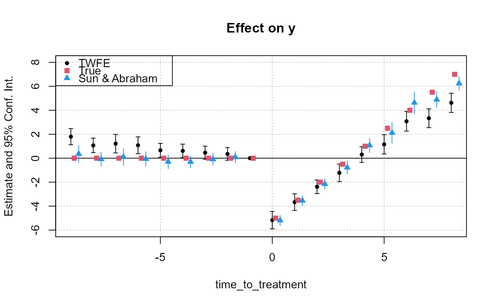

Simple tool that aggregates the value of CATT coefficients in staggered difference-in-difference setups (see details).
# S3 method for fixest
aggregate(x, agg, full = FALSE, use_weights = TRUE, ...)A fixest object.
A character scalar describing the variable names to be aggregated, it is pattern-based. All variables that match the pattern will be aggregated. It must be of the form "(root)", the parentheses must be there and the resulting variable name will be "root". You can add another root with parentheses: "(root1)regex(root2)", in which case the resulting name is "root1::root2". To name the resulting variable differently you can pass a named vector: c("name" = "pattern") or c("name" = "pattern(root2)"). It's a bit intricate sorry, please see the examples.
Logical scalar, defaults to FALSE. If TRUE, then all coefficients are returned, not only the aggregated coefficients.
Logical, default is TRUE. If the estimation was weighted, whether the aggregation should take into account the weights. Basically if the weights reflected frequency it should be TRUE.
Arguments to be passed to summary.fixest.
It returns a matrix representing a table of coefficients.
This is a function helping to replicate the estimator from Sun and Abraham (2020). You first need to perform an estimation with cohort and relative periods dummies (typically using the function i), this leads to estimators of the cohort average treatment effect on the treated (CATT). Then you can use this function to retrieve the average treatment effect on each relative period, or for any other way you wish to aggregate the CATT.
Note that contrary to the SA article, here the cohort share in the sample is considered to be a perfect measure for the cohort share in the population.
Liyang Sun and Sarah Abraham, forthcoming, "Estimating Dynamic Treatment Effects in Event Studies with Heterogeneous Treatment Effects". Journal of Econometrics.
#
# DiD example
#
data(base_stagg)
# 2 kind of estimations:
# - regular TWFE model
# - estimation with cohort x time_to_treatment interactions, later aggregated
# Note: the never treated have a time_to_treatment equal to -1000
# Now we perform the estimation
res_twfe = feols(y ~ x1 + i(time_to_treatment, treated,
ref = c(-1, -1000)) | id + year, base_stagg)
# we use the "i." prefix to force year_treated to be considered as a factor
res_cohort = feols(y ~ x1 + i(time_to_treatment, i.year_treated,
ref = c(-1, -1000)) | id + year, base_stagg)
# Displaying the results
iplot(res_twfe, ylim = c(-6, 8))
att_true = tapply(base_stagg$treatment_effect_true,
base_stagg$time_to_treatment, mean)[-1]
points(-9:8 + 0.15, att_true, pch = 15, col = 2)
# The aggregate effect for each period
agg_coef = aggregate(res_cohort, "(ti.*nt)::(-?[[:digit:]]+)")
x = c(-9:-2, 0:8) + .35
points(x, agg_coef[, 1], pch = 17, col = 4)
ci_low = agg_coef[, 1] - 1.96 * agg_coef[, 2]
ci_up = agg_coef[, 1] + 1.96 * agg_coef[, 2]
segments(x0 = x, y0 = ci_low, x1 = x, y1 = ci_up, col = 4)
legend("topleft", col = c(1, 2, 4), pch = c(20, 15, 17),
legend = c("TWFE", "True", "Sun & Abraham"))

# The ATT
aggregate(res_cohort, c("ATT" = "treatment::[^-]"))
#> Estimate Std. Error t value Pr(>|t|)
#> ATT -1.133749 0.2050705 -5.528584 2.882038e-07
with(base_stagg, mean(treatment_effect_true[time_to_treatment >= 0]))
#> [1] -1
# The total effect for each cohort
aggregate(res_cohort, c("cohort" = "::[^-].*year_treated::([[:digit:]]+)"))
#> Estimate Std. Error t value Pr(>|t|)
#> cohort::2 2.4347382 0.2860464 8.5116905 2.666655e-13
#> cohort::3 1.3766102 0.6197413 2.2212658 2.873387e-02
#> cohort::4 0.7543763 0.8054956 0.9365368 3.513968e-01
#> cohort::5 -2.8079538 0.3865452 -7.2642310 1.080972e-10
#> cohort::6 -2.7225787 0.5950041 -4.5757310 1.448581e-05
#> cohort::7 -5.0751928 0.5676398 -8.9408692 3.282508e-14
#> cohort::8 -5.0928206 0.3505856 -14.5266109 9.239445e-26
#> cohort::9 -7.2367302 0.3288544 -22.0058788 7.398376e-39
#> cohort::10 -8.7115753 0.5128055 -16.9880706 2.100254e-30